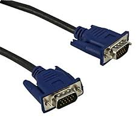
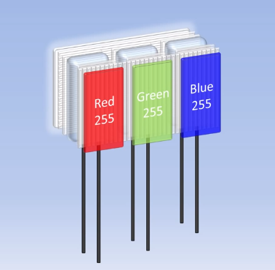
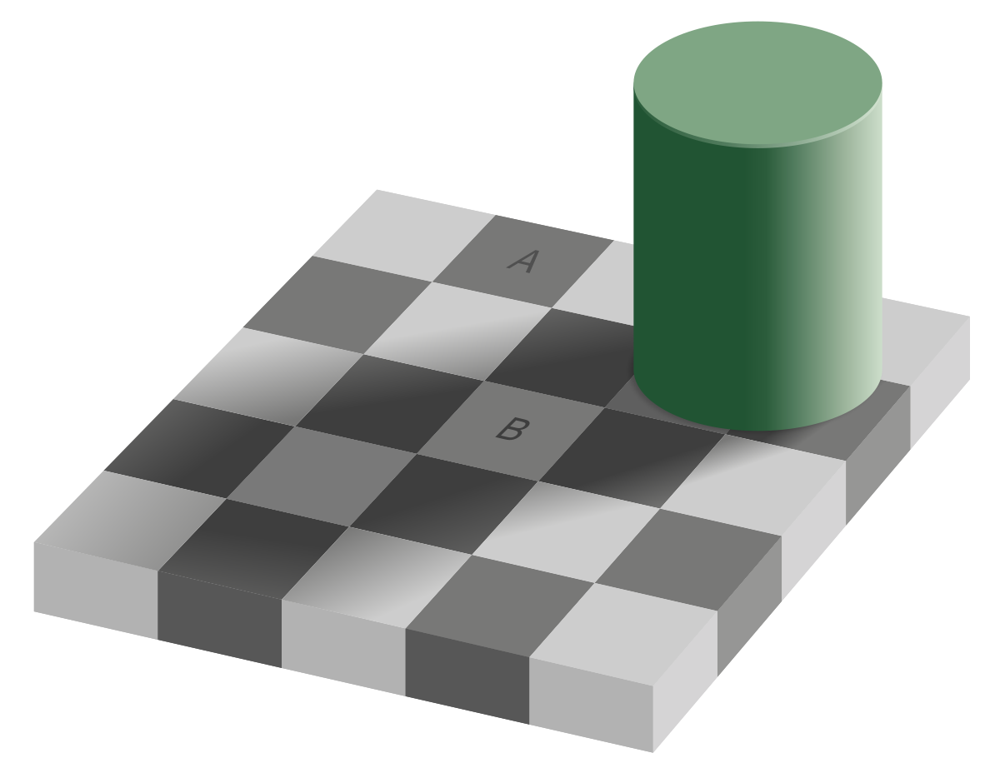
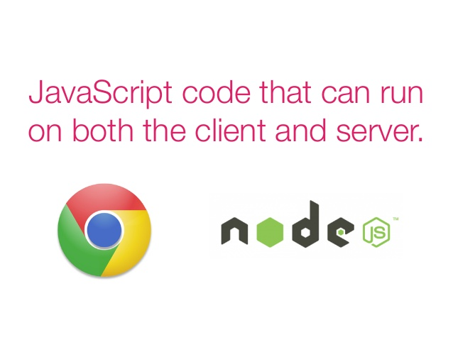
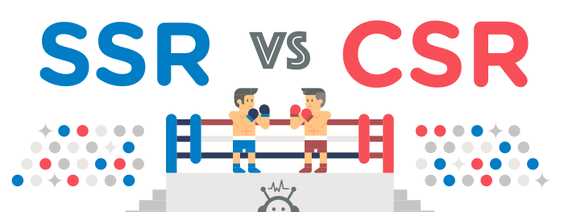
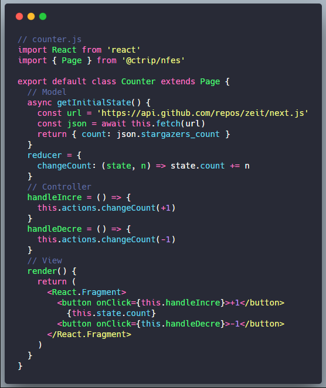

<html>

<head>
    <meta charset="utf-8">
    <meta name="viewport" content="width=device-width, initial-scale=1.0, maximum-scale=1.0, user-scalable=no">

    <title>Make Front End MVC Great Again</title>

    <link rel="stylesheet" href="css/reveal.css">
    <link rel="stylesheet" href="css/theme/black.css">

    <!-- Theme used for syntax highlighting of code -->
    <link rel="stylesheet" href="lib/css/zenburn.css">

    <!-- Printing and PDF exports -->
    <script>
        var link = document.createElement('link');
        link.rel = 'stylesheet';
        link.type = 'text/css';
        link.href = window.location.search.match(/print-pdf/gi) ? 'css/print/pdf.css' : 'css/print/paper.css';
        document.getElementsByTagName('head')[0].appendChild(link);
    </script>
</head>

<body>
    <div class="reveal">
        <div class="slides">
            <section data-markdown>
                <script type="text/template">
                    ## Make Front End MVC Great Again
                    古映杰@度假研发部
                </script>
            </section>
            <section data-markdown>
                <script type="text/template">
                    ## 前端 MVC 已死？
                    [Is Model-View-Controller dead on the front end?](https://medium.freecodecamp.org/is-mvc-dead-for-the-frontend-35b4d1fe39ec)
                    
                </script>
            </section>
            <section data-markdown>
                <script type="text/template">
                    ## 我们抛弃的是 Backbone 而不是 MVC
                    - MVC 也可以 component-based
                    - React/Vue as <strong style="color:#ea088a">V</strong> of MVC  
                    - MVC 也可以 unidirectional architectures
                    - Redux/Vuex as <strong style="color:#ea088a">M</strong> of MVC
                    - 2010 年 backbone 实现 MVC 时的技术选型落后
                    - 2018 年我们可以用最新技术再次实现前端 MVC
                </script>
            </section>
            <section data-markdown>
                <script type="text/template">
                    ## MVC 与 OOP
                    Model-Controller-View && Object-Oriented Programming
                    - MVC 和 OOP 都有一个原始解读([Original](https://heim.ifi.uio.no/~trygver/1979/mvc-2/1979-12-MVC.pdf))
                    - 在多种编程语言里都有不尽相同的体现
                    - 只有原始的那一个，才是真正的 MVC 或 OOP ？
                    - Particular MVC architectures can <strong style="color:#ea088a">vary significantly</strong> from the traditional description --wiki
                </script>
            </section>
            <section data-markdown>
                <script type="text/template">
                    ## MVC 的开放定义
                    任意跟 UI 相关的系统都可以解耦成 MVC 三个部分
                    - <strong style="color:#ea088a">Model</strong> : manages the data, logic and rules of the application
                    - <strong style="color:#ea088a">View</strong> : can be any output representation of information
                    - <strong style="color:#ea088a">Controller</strong> : accepts input and converts it to commands for the model or view
                </script>
            </section>
            <section data-markdown>
                <script type="text/template">
                    ## MVP 与 MVC
                    [MVP: The Taligent Programming Model for C++ and Java](http://www.wildcrest.com/Potel/Portfolio/mvp.pdf)
                    - To capture this distinction we refer to this kind of controller as a <strong style="color:#ea088a">presenter</strong>
                    - acknowledging its origins as a generalized form of MVC
                    <center></center>
                </script>
            </section>
            <section data-markdown>
                <script type="text/template">
                    ## MVVM 与 MVC
                    [Introduction to MVVM pattern for building WPF apps](https://blogs.msdn.microsoft.com/johngossman/2005/10/08/introduction-to-modelviewviewmodel-pattern-for-building-wpf-apps/)
                    - MVVM is a <strong style="color:#ea088a">variation</strong> of MVC
                    - the view is the responsibility of a designer
                    - Controller in modern GUI development is a long digression
                    - "I tend to think it just faded into the background"
                </script>
            </section>
            <section data-markdown>
                <script type="text/template">
                    ## 多层次 MVC 架构
                    user-input -> controller -> model -> view
                    - 在浏览器里输入 url
                    - 到用户看到界面过程中
                    - 经历了多少层 MVC 架构
                    - 上一层的  view 输出
                    - 是下一层 MVC 的 input 输入
                </script>
            </section>
            <section data-markdown>
                <script type="text/template">
                    ## 第一层：Backend MVC
                    rails, django, .net-mvc, express.js...
                    - url -> dns -> ip -> server
                    - path -> router -> controller
                    - model/db -> view/html
                </script>
            </section>
            <section data-markdown>
                <script type="text/template">
                    ## 第二层：Browser MVC
                    IE, Chrome, Firefox, Safari, Opera...
                    - html -> window/tab-controller
                    - DOM: Document Object Model
                    - CSSOM: CSS Object Model
                    - DOM + CSSOM -> RenderTree(View)
                </script>
            </section>
            <section data-markdown>
                <script type="text/template">
                    ## 第三层：Front-End MVC
                    Backbone, Angularjs, Knockout...
                    - View: html/dom/jquery/template-engine/react/vue
                    - Model: Backbone.Model/Redux/Vuex/custom-model
                    - Controller: custom-controller
                </script>
            </section>
            <section data-markdown>
                <script type="text/template">
                    ## 第四层：Operating-System MVC
                    [How Hardware and Software Work Together](http://www.ppmhcharterschool.org/ourpages/auto/2012/10/23/42674192/Chapter%202%20How%20Hardware%20and%20Software%20Work%20Together.pdf)
                    - code as data input -> compiler/os -> machine-code/cpu
                    - device-drives -> BIOS -> video-card(View)
                    <center></center>
                </script>
            </section>
            <section data-markdown>
                <script type="text/template">
                    ## 第五层：Monitor MVC
                    - monitor cable input -> monitor -> pixel -> light(view)
                    <center>
                        
                        
                    </center>
                </script>
            </section>
            <section data-markdown>
                <script type="text/template">
                    ## 第六层：EYES MVC
                    - light-input -> lens -> retina -> electrical-signal(view)
                    <center></center>
                </script>
            </section>
            <section data-markdown>
                <script type="text/template">
                    ## 视觉盲点
                    [视觉盲点知多少？](https://zhuanlan.zhihu.com/p/28105827)
                    - 脊椎动物的视网膜都是倒装的方式，是进化的结果
                    - 章鱼的眼睛没有盲点，其视神经分布在视网膜之后
                    - 光信号 -> 感光细胞 -> 生物电信号(不完备) 
                    <center></center>
                </script>
            </section>
            <section data-markdown>
                <script type="text/template">
                    ## 视错觉
                    A 和 B 的像素值完全一样，但我们大脑觉得它们不一样
                    <center></center>
                </script>
            </section>
            <section data-markdown>
                <script type="text/template">
                    ## 第七层：VISION MVC
                    - electrical-signal input -> brain -> visual-cortex(view)
                    <center></center>
                </script>
            </section>
            <section data-markdown>
                <script type="text/template">
                    ## 聚焦 Web MVC
                    - node.js：Backend MVC
                    - browser: Frontend MVC
                    - node.js + browser: <strong style="color:#ea088a">Isomorphic MVC</strong>
                    <center></center>
                </script>
            </section>
            <section data-markdown>
                <script type="text/template">
                    ## 同构有什么好处？
                    - 多页应用（MPA）：前后端不分离，频繁刷新页面
                    - 单页应用（SPA）：首屏渲染慢，较难做 SEO 优化
                    - 同构应用：既是 MPA，又是 SPA，具备两种优势
                    <center></center>
                </script>
            </section>
            <section data-markdown>
                <script type="text/template">
                    ## React in MVC perspective
                    React 组件包含了一个 MVC 结构
                    ```javascript
                    class MVC extends React.Component {
                        // Model
                        state = { count: 0 } 
                        // Controller
                        handleClick = () => this.setState({ count: this.state.count + 1})
                        // View
                        render() { return <View {...this.props} {...this.state} /> }
                    }
                    ```
                </script>
            </section>
            <section data-markdown>
                <script type="text/template">
                    ## NFES-MVC
                    <center></center>
                </script>
            </section>
            <section data-markdown>
                <script type="text/template">
                    ## Q & A
                </script>
            </section>
        </div>
    </div>

    <script src="lib/js/head.min.js"></script>
    <script src="js/reveal.js"></script>

    <script>
        // More info https://github.com/hakimel/reveal.js#configuration
        Reveal.initialize({
            history: true,

            // More info https://github.com/hakimel/reveal.js#dependencies
            dependencies: [
                { src: 'plugin/markdown/marked.js' },
                { src: 'plugin/markdown/markdown.js' },
                { src: 'plugin/notes/notes.js', async: true },
                { src: 'plugin/highlight/highlight.js', async: true, callback: function () { hljs.initHighlightingOnLoad(); } }
            ]
        });
    </script>
</body>

</html>